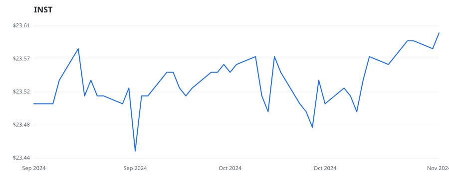

← Back to leaderboard
INST — INST
Other
· unknown cap
$23.45–$23.60
Available range
Members who bought INST earned a dollar-weighted
+0.0% from their disclosure
dates, versus +1.3% for the S&P 500 over the same holding
windows (-1.3% alpha).

▲ green = a disclosed purchase · ▼ red = a disclosed sale (plotted on disclosure date)
Key financials (FY 2023)
Revenue $530.2M
Net income $-34.1M Operating income $-3.2M
Diluted EPS — Assets $2.2B
Equity $1.3B
Recent news
Education ERP Market to Reach USD 75.84 Billion by 2032 Fueled by Technological Innovations and Rising Institutional Demands | Research by SNS Insider
— GlobeNewswire Inc., 2024-09-03 KKR, Francisco Partners vying to acquire Instructure, sources say By Reuters - Investing.com
— Investing.com, 2024-07-03 KKR and Francisco Partners vying for Instructure, sources say By Investing.com - Investing.com Australia
— Investing.com, 2024-07-03 KKR, Francisco Partners vying to acquire Instructure, sources say By Reuters - Investing.com
— Investing.com, 2024-07-03 Instructure Holdings Stock Is Rising: What's Going On?
— Benzinga, 2024-06-11
🏛️ Members of Congress who traded INST
Member Chamber Out-performer
Disclosed buys $ Return on buys
Markwayne Mullin
senate yes $8K
+0.0%
Disclosed $ figures are bracket midpoints — filings report ranges
(e.g. $1,001–$15,000), not exact amounts.
Trades: U.S. House Clerk & Senate eFD disclosures · Market data: Polygon.io ·
Returns assume buying at the close on/after each disclosure date, benchmarked vs SPY.
Educational use only — not investment advice.